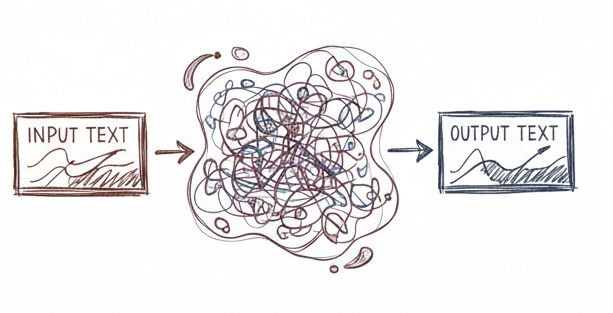
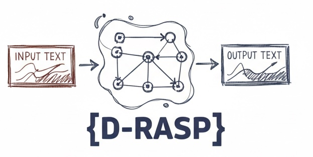
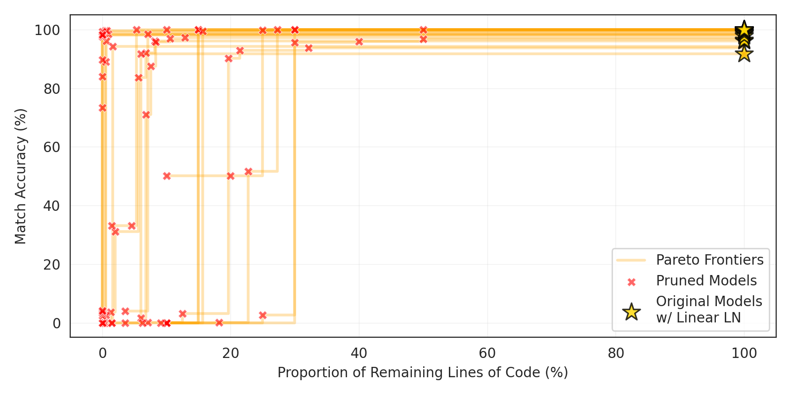
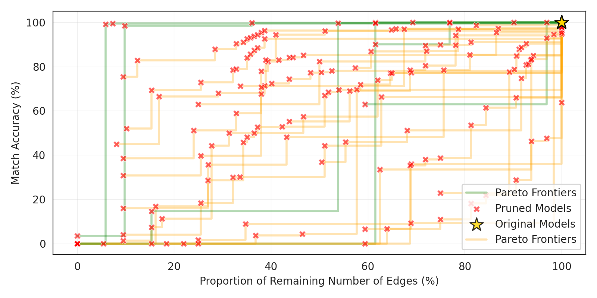

Extracting interpretable algorithms internally implemented by trained Transformers.
Do trained Transformers internally implement short interpretable algorithms? Can we rewrite Transformers into a format understandable to humans?

Turns out, at least in a controllable setting of small models and simple tasks, we can. In this paper, we rewrite length-generalizable Transformers trained on algorithmic and formal languages tasks into interpretable programs in D-RASP programming language.
D-RASP is a dialect of RASP [1], a programming language that simulates Transformer architecture. With the help of RASP programs, it was previously shown why models length generalize [2, 3]. Specifically, if a task can be expressed via a short program in C-RASP, another RASP dialect, a Transformer is more likely to generalize from short training sequences to longer, unseen inputs. However, it is not certain whether trained Transformers actually implement the programs predicted by C-RASP.
Up until now, there was no way of showing whether this is the case, since there was no way of extracting RASP program from a trained Transformer. Any RASP program can be compiled into a Transformer architecture[4], but not vise-versa.

We present a method that closes this gap. We build our method on (i) reparametrization of the model's internal computations and (ii) circuit discovery. Unlike classical circuit discovery, our method yields universal algorithms, not tied to specific prompt templates and input lengths, and inherently provides interpetations for program operations.
Our results demonstrate that length-generalizing Transformers can internally implement simple interpretable algorithms and that these algorithms can be extracted automatically as readable code.
Our decompilation method consists of two key steps:
Results show that the models that generalize well to longer input lengths, unseen during training, can often be decompiled, while models that do not length-generalize cannot be decompiled. Moreover, when decompilation succeeds, we can usually vastly cut down the size of programs compared to the initial D-RASP reparameterization. In contrast, for non-length-generalizing models, pruning usually has only very limited success. Thus, interestingly, even though all models are transformers of similar sizes, generalizable models tend to be more interpretable.

Decompilation drastically reduces program complexity for length-generalizing models.

Pruning has limited success for non-length-generalizing models.
Match Accuracy vs. Program Size for length-generalizing (left) and non-length-generalizing (right) models. Each red cross is a model pruned with a different set of hyperparameters; stars are the original unpruned models, and lines connect different pruned versions of the same model.
We show a program extracted for finding the most frequent character in a string. In Line 1, the program uniformly aggregates all tokens in the input sequence. a1 thus holds counts for each of the tokens in the context, which makes the token with the highest value in a1 the majority token. This is why, in Line 2, a1 gets directly projected to the vocabulary space with a diagonal projection matrix to get the answer.
We show a program extracted from a Transformer trained to copy a string in which each token is unique. In this case, the model implements a classic "induction head"[5]. The first select+aggregate operation retrieves the directly preceding symbol for each position; the second one retrieves whichever prior symbol was preceded by the current symbol.
We show an extracted program for sorting a list of integers. Here, the heavy lifting is done by a select operation in Line 1, favoring the smallest keys larger than the query. A per-position operation in Line 3 then makes the aggregated histogram vector one-hot.
We show a program for Dyck-4, the language of well-nested strings over one pair of parentheses (opening "a" and closing "b") with depth at most four (equivalently, the formal language (a(a(a(ab)*b)*b)*b)*). Uniform aggregation in Line 1 creates a histogram of BOS, opening, and closing brackets; a per-position activation in Line 2 then performs a threshold calculation: e.g., EOS is allowed only when "a" and "b" are balanced. Look at the MLP transformation explained in Line 3: the EOS logit is positive when "a" and "b" are balanced, and the "b" logit is positive only when "a" and "b" are unbalanced.
Select a task to see programs for the model trained on it. Click on different pruning runs on the Pareto frontier to see more or less sparse programs. Click on individual code lines to see both activation values and explained operations.
[1] Weiss, G., Goldberg, Y., & Yahav, E. (2021). Thinking Like Transformers. ICML 2021.
[2] Zhou, H., Bradley, A., Littwin, E., Razin, N., Saremi, O., Susskind, J. M., Bengio, S., and Nakkiran, P. (2024). What Algorithms can Transformers Learn? A Study in Length Generalization.
[3] Huang, X., Yang, A., Bhattamishra, S., Sarrof, Y., Krebs,A., Zhou, H., Nakkiran, P., and Hahn, M. (2025). A formal framework for understanding length generalization in transformers.
[4] Lindner, D., Kramár, J., Farquhar, S., Rahtz, M., McGrath, T., and Mikulik, V. (2023). Tracr: Compiled transformers as a laboratory for interpretability.
[5] Olsson, C., Elhage, N., Nanda, N., Joseph, N., DasSarma, N., Henighan, T., Mann, B., Askell, A., Bai, Y., Chen, A., Conerly, T., Drain, D., Ganguli, D., Hatfield-Dodds, Z., Hernandez, D., Johnston, S., Jones, A., Kernion, J., Lovitt, L., Ndousse, K., Amodei, D., Brown, T., Clark, J., Kaplan, J., McCandlish, S., and Olah, C. (2022). In-context learning and induction heads.